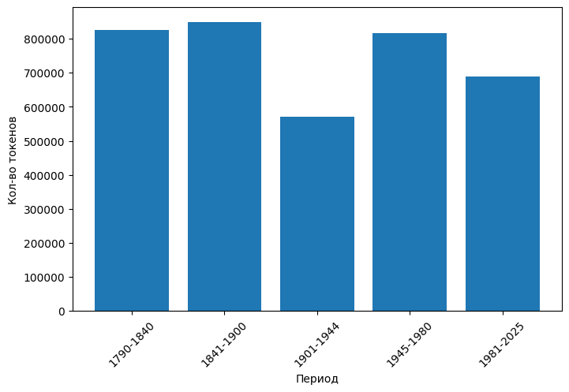
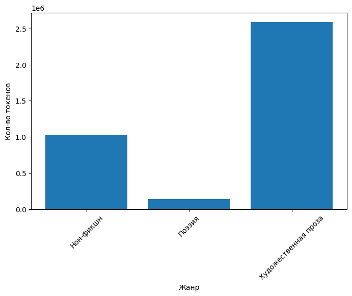

import os
import pandas as pd
import matplotlib.pyplot as plt
from razdel import tokenize
from sklearn.feature_extraction.text import TfidfVectorizer
import nltk
from nltk.corpus import stopwords
import spacy
from collections import Counter
import numpy as np
from sklearn.decomposition import TruncatedSVD
from sklearn.metrics.pairwise import cosine_similarity
from scipy.stats import pearsonr
from gensim.models import Word2Vec
import matplotlib.pyplot as pltЯзык моря в британской маринистической литературе
Был вручную собран корпус из 39 британских текстов разных годов: от 1790 до 2023. Именно Великобритания была выбрана, поскольку это страна с крайне богатой историей мореплавания и флота, причем море до сих пор имеет очень большое значение в ее культуре
Все собранные книги имеют достаточно большой фокус на море, во многих действие происходит на кораблях или сосредоточено на моряках. Эти книги были разделены на следующие временные периоды в соответствии с культурно-политическими событиями истории Великобритании и литературными течениями:
1790-1840 – предвикторианская эпоха, в основном романтические тексты
1841-1900 – викторианская эпоха, происходит переход от романтизма к реализму
1901-1944 – период включает обе мировые войны, включает в себя модернисткие тексты
1945-1980 – послевоенный период, зарождение постмодернизма
1981-2025 – постколониальный и антиимпералистический период
Для каждого периода было отобрано 7-9 книг, причем были сделаны попытки сделать тексты одного периода как можно более разнообразными.
Книги также были поделены на следующие 3 жанра: нон-фикшн (в него входят как дневники и мемуары, так и тексты, написанными другими людьми), поэзия, художественная проза. Поскольку корпус текстов небольшой, более дробное деление привело бы к тому, что в некоторых жанрах всего 1-2 текста. Но даже для 3 жанров интересно будет посмотреть, существует ли в них разница в том, как описывается море.
Подготовка текстов к анализу
# таблица с метаданными (сделана вручную)
df = pd.read_csv('table.csv')
df.head(10)| Произведение | Год | Период | Жанр | |
|---|---|---|---|---|
| 0 | A narrative of the mutiny, on board his majest... | 1790 | 1790-1840 | Нон-фикшн |
| 1 | The Rime of the Ancient Mariner | 1797 | 1790-1840 | Поэзия |
| 2 | The Corsair | 1814 | 1790-1840 | Поэзия |
| 3 | A Voyage Round Great Britain | 1814 | 1790-1840 | Нон-фикшн |
| 4 | The Pirate | 1822 | 1790-1840 | Художественная проза |
| 5 | The Island | 1823 | 1790-1840 | Поэзия |
| 6 | Mr Midshipman Easy | 1836 | 1790-1840 | Художественная проза |
| 7 | Masterman Ready, or the Wreck of the Pacific | 1841 | 1841-1900 | Художественная проза |
| 8 | The Forsaken Merman | 1849 | 1841-1900 | Поэзия |
| 9 | Westward ho! | 1855 | 1841-1900 | Художественная проза |
df['Название файла'] = (df['Произведение'].str.lower().str.replace(' ', '_') + '.txt')def load_text(filename):
with open(filename, 'r', encoding='utf-8') as f:
return f.read()
# разделение текстов на токены
df['Текст'] = df['Название файла'].apply(load_text)
df['Токены'] = df['Текст'].apply(lambda t: [substring.text for substring in tokenize(t)])
df['Кол-во токенов'] = df['Токены'].apply(lambda tokens: len(tokens))df.head()| Произведение | Год | Период | Жанр | Название файла | Текст | Токены | Кол-во токенов | |
|---|---|---|---|---|---|---|---|---|
| 0 | A narrative of the mutiny, on board his majest... | 1790 | 1790-1840 | Нон-фикшн | a_narrative_of_the_mutiny,_on_board_his_majest... | A\nNARRATIVE\nOF THE\nMUTINY,\nON BOARD\nHIS M... | [A, NARRATIVE, OF, THE, MUTINY, ,, ON, BOARD, ... | 33746 |
| 1 | The Rime of the Ancient Mariner | 1797 | 1790-1840 | Поэзия | the_rime_of_the_ancient_mariner.txt | \n\n\nTHE RIME OF THE ANCIENT MARINER\n\n\n\nI... | [THE, RIME, OF, THE, ANCIENT, MARINER, IN, SEV... | 4751 |
| 2 | The Corsair | 1814 | 1790-1840 | Поэзия | the_corsair.txt | THE CORSAIR\nLORD BYRON\nTable of Contents\nTH... | [THE, CORSAIR, LORD, BYRON, Table, of, Content... | 5863 |
| 3 | A Voyage Round Great Britain | 1814 | 1790-1840 | Нон-фикшн | a_voyage_round_great_britain.txt | Full text of "A voyage round Great Britain, un... | [Full, text, of, ", A, voyage, round, Great, B... | 345805 |
| 4 | The Pirate | 1822 | 1790-1840 | Художественная проза | the_pirate.txt | THE PIRATE.EDITOR’S INTRODUCTION\n\nINTRODUCTI... | [THE, PIRATE, ., EDITOR, ’, S, INTRODUCTION, I... | 241317 |
Проверим теперь, насколько корпус сбалансированный
period_stats = df.groupby('Период')['Кол-во токенов'].agg(['count', 'sum', 'mean']).sort_index()period_stats| count | sum | mean | |
|---|---|---|---|
| Период | |||
| 1790-1840 | 7 | 826587 | 118083.857143 |
| 1841-1900 | 8 | 849594 | 106199.250000 |
| 1901-1944 | 7 | 570867 | 81552.428571 |
| 1945-1980 | 9 | 816313 | 90701.444444 |
| 1981-2025 | 8 | 688495 | 86061.875000 |
plt.figure(figsize=(8,5))
plt.bar(period_stats.index, period_stats['sum'])
plt.ylabel('Кол-во токенов')
plt.xlabel('Период')
plt.xticks(rotation=45)
plt.show()
Можно увидеть, что корпус получился не совсем сбалансированный по периодам, однако, скорее всего, достаточно, чтобы это не мешало никаким методам
genre_stats = df.groupby('Жанр')['Кол-во токенов'].agg(['count', 'sum', 'mean']).sort_index()
genre_stats| count | sum | mean | |
|---|---|---|---|
| Жанр | |||
| Нон-фикшн | 7 | 1019921 | 145703.000000 |
| Поэзия | 11 | 141387 | 12853.363636 |
| Художественная проза | 21 | 2590548 | 123359.428571 |
plt.figure(figsize=(8,5))
plt.bar(genre_stats.index, genre_stats['sum'])
plt.ylabel('Кол-во токенов')
plt.xlabel('Жанр')
plt.xticks(rotation=45)
plt.show()
Ожидаемо, по жанрам балланс уже сильно хуже - подкорпус поэзии оказался в разы меньше других. Разница между прозой и нон-фикшеном также превышает 2.5 раза. Поэтому на материале жанров не будут использоваться методы, для которых размер корпусов важен, например, word2vec
df.groupby(['Период', 'Жанр'])['Кол-во токенов'].sum()Период Жанр
1790-1840 Нон-фикшн 379551
Поэзия 31804
Художественная проза 415232
1841-1900 Нон-фикшн 202328
Поэзия 30058
Художественная проза 617208
1901-1944 Нон-фикшн 70112
Поэзия 36196
Художественная проза 464559
1945-1980 Нон-фикшн 113047
Поэзия 22892
Художественная проза 680374
1981-2025 Нон-фикшн 254883
Поэзия 20437
Художественная проза 413175
Name: Кол-во токенов, dtype: int64Каждый из жанров присутствует во всех периодах, поэтому можно сравнивать тексты по жанрам, не боясь, что картина будет искажена периодами (нет такого, что поэзия присутствует только в романтическом периоде и лишь поэтому ее ключевые слова отличаются).
TF-IDF анализ
period_texts = df.groupby('Период')['Текст'].apply(' '.join)
vectorizer = TfidfVectorizer(stop_words='english', lowercase=True)
tfidf_matrix = vectorizer.fit_transform(period_texts)
feature_names = vectorizer.get_feature_names_out()
periods_list = period_texts.index.tolist()
for i, year in enumerate(periods_list):
row = tfidf_matrix[i].toarray().flatten()
# 20 ключевых слов для каждого периода
top_indices = row.argsort()[-20:][::-1]
top_words = [(feature_names[j], round(row[j], 3)) for j in top_indices]
print(f'\n{year}:')
for word, score in top_words:
print(f' {word}: {score}')
1790-1840:
said: 0.237
jack: 0.193
great: 0.18
sea: 0.165
mordaunt: 0.151
mr: 0.145
little: 0.138
time: 0.137
man: 0.135
mesty: 0.123
gascoigne: 0.122
captain: 0.112
like: 0.11
round: 0.109
replied: 0.099
minna: 0.095
men: 0.094
cleveland: 0.092
water: 0.09
good: 0.09
1841-1900:
amyas: 0.316
said: 0.251
like: 0.19
man: 0.173
seagrave: 0.165
old: 0.156
sir: 0.152
mr: 0.152
ready: 0.135
little: 0.13
men: 0.13
time: 0.119
sea: 0.118
good: 0.108
long: 0.105
great: 0.101
day: 0.098
did: 0.094
william: 0.093
come: 0.089
1901-1944:
said: 0.287
hornblower: 0.226
man: 0.178
captain: 0.176
blood: 0.175
like: 0.172
men: 0.165
ship: 0.163
did: 0.143
sea: 0.136
time: 0.125
came: 0.116
eyes: 0.102
old: 0.1
thought: 0.097
little: 0.096
come: 0.092
away: 0.092
mr: 0.091
way: 0.09
1945-1980:
said: 0.422
like: 0.181
sir: 0.17
time: 0.167
ship: 0.144
lockhart: 0.13
captain: 0.129
man: 0.118
ericson: 0.118
sea: 0.117
mr: 0.116
did: 0.107
came: 0.104
men: 0.102
hornblower: 0.099
jack: 0.097
deck: 0.097
away: 0.096
just: 0.096
way: 0.094
1981-2025:
said: 0.198
like: 0.19
men: 0.175
isabel: 0.172
sumner: 0.142
bulkeley: 0.138
nantucket: 0.133
time: 0.132
ship: 0.131
just: 0.131
tom: 0.125
note: 0.119
says: 0.119
man: 0.118
text: 0.114
reference: 0.114
way: 0.113
captain: 0.111
pollard: 0.111
sea: 0.106Можно увидеть, что довольно большая часть ключевых слов для каждого периода - имена собственные (в основном персонажей романов). Поэтому я сделаю список стоп-слов, в который будут также включены эти имена. Проблема в том, что в некоторых случаях слово может быть как именем собственным, так и нарицательным - little/Little, blood/Blood и т.п. Для этого я отдельно посмотрела на слова в tf-idf(lowercase=False)
period_texts = df.groupby('Период')['Текст'].apply(' '.join)
# чтобы можно было отличить имена собственные от просто существительных/прилагательных
vectorizer = TfidfVectorizer(stop_words='english', lowercase=False)
tfidf_matrix = vectorizer.fit_transform(period_texts)
feature_names = vectorizer.get_feature_names_out()
periods_list = period_texts.index.tolist()
for i, year in enumerate(periods_list):
row = tfidf_matrix[i].toarray().flatten()
# 40 ключевых слов для каждого периода
top_indices = row.argsort()[-40:][::-1]
top_words = [(feature_names[j], round(row[j], 3)) for j in top_indices]
print(f'\n{year}:')
for word, score in top_words:
print(f' {word}: {score}')
1790-1840:
The: 0.452
said: 0.206
Jack: 0.164
sea: 0.141
Mordaunt: 0.131
Mr: 0.125
It: 0.125
time: 0.118
little: 0.118
ROUND: 0.113
man: 0.112
Mesty: 0.105
Gascoigne: 0.105
BRITAIN: 0.098
great: 0.098
And: 0.093
like: 0.091
But: 0.088
replied: 0.086
Minna: 0.082
VOYAGE: 0.081
men: 0.08
Cleveland: 0.08
He: 0.079
water: 0.077
long: 0.076
In: 0.076
GREAT: 0.076
good: 0.073
Norna: 0.073
place: 0.072
coast: 0.07
country: 0.069
small: 0.069
did: 0.069
Captain: 0.068
shall: 0.067
day: 0.066
Brenda: 0.066
Easy: 0.065
1841-1900:
The: 0.326
Amyas: 0.284
said: 0.228
And: 0.189
like: 0.169
man: 0.154
Seagrave: 0.15
Mr: 0.137
He: 0.126
Ready: 0.12
old: 0.117
little: 0.116
men: 0.114
But: 0.109
It: 0.109
time: 0.106
sea: 0.102
sir: 0.094
good: 0.092
long: 0.089
day: 0.088
great: 0.088
We: 0.084
William: 0.084
did: 0.079
went: 0.079
water: 0.075
away: 0.074
ship: 0.073
know: 0.073
shall: 0.07
came: 0.07
come: 0.067
They: 0.066
God: 0.063
night: 0.063
round: 0.062
head: 0.062
half: 0.061
hand: 0.061
1901-1944:
The: 0.358
He: 0.317
said: 0.226
And: 0.216
It: 0.199
Hornblower: 0.179
But: 0.174
man: 0.137
like: 0.131
men: 0.129
ship: 0.128
Blood: 0.12
She: 0.118
did: 0.107
Captain: 0.1
sea: 0.099
time: 0.096
You: 0.09
came: 0.09
They: 0.086
There: 0.083
eyes: 0.08
thought: 0.077
old: 0.074
little: 0.074
away: 0.072
Mr: 0.071
way: 0.071
long: 0.069
went: 0.067
come: 0.067
know: 0.064
face: 0.064
hand: 0.064
great: 0.063
Natividad: 0.062
head: 0.061
His: 0.06
moment: 0.059
looked: 0.059
1945-1980:
said: 0.363
The: 0.322
He: 0.256
It: 0.194
like: 0.15
time: 0.141
sir: 0.135
But: 0.127
ship: 0.122
Lockhart: 0.112
Ericson: 0.101
Mr: 0.1
man: 0.099
They: 0.096
sea: 0.095
You: 0.095
There: 0.093
And: 0.092
came: 0.089
did: 0.086
men: 0.086
Hornblower: 0.085
away: 0.083
Jack: 0.083
deck: 0.082
way: 0.081
little: 0.077
We: 0.077
water: 0.076
Compass: 0.075
went: 0.075
thought: 0.074
round: 0.074
long: 0.071
Sophie: 0.07
just: 0.069
Captain: 0.069
know: 0.068
ll: 0.066
moment: 0.064
1981-2025:
The: 0.415
He: 0.219
REFERENCE: 0.187
TEXT: 0.187
said: 0.156
like: 0.143
Isabel: 0.136
men: 0.134
It: 0.127
NOTE: 0.126
GO: 0.126
Cheap: 0.116
Sumner: 0.112
Bulkeley: 0.108
Chase: 0.107
Nantucket: 0.104
time: 0.102
ship: 0.099
Tom: 0.098
She: 0.098
says: 0.093
IN: 0.091
TO: 0.091
just: 0.089
man: 0.089
But: 0.089
way: 0.089
Pollard: 0.086
And: 0.086
They: 0.083
know: 0.081
water: 0.078
You: 0.076
Leah: 0.076
Hannah: 0.075
Byron: 0.072
Drax: 0.072
sea: 0.071
Wager: 0.069
away: 0.069# я решила удалять только имена персонажей и кораблей, оставляя названия мест вроде Nuntucket
# также я удалила источник 'project gutenberg', указание на который присутствует в некоторых книгах
character_names = ['Jack', 'Mordaunt', 'Mesty', 'Gascoigne', 'Minna', 'Cleveland', 'Norna', 'Brenda', 'Easy',
'Amyas', 'Seagrave', 'Ready', 'William',
'Hornblower', 'Blood', 'Natividad',
'Lockhart', 'Ericson', 'Sophie',
'Isabel', 'Cheap', 'Sumner', 'Bulkeley', 'Chase', 'Tom', 'Pollard', 'Leah', 'Hannah', 'Byron', 'Drax',
'project', 'Gutenberg',
'Dauber', 'John']
# перед векторизацией убираем все имена из текстов
def remove_names(text):
tokens = text.split()
tokens = [t for t in tokens if t.strip('.-,!?()?*') not in character_names]
return ' '.join(tokens)
df['Текст без имен'] = df['Текст'].apply(remove_names)Также я решила оставить только существительные и прилагательные в ключевых словах, поскольку глаголы все никак не относились к теме моря и были более стандартными ‘said’, ‘replied’ и т.д. По существительным и прилагательным сильно легче понять основные темы литературы периода
nlp = spacy.load('en_core_web_sm', disable=['parser', 'ner', 'lemmatizer'])
# приходится дополнительно изменить ограничение, иначе слишком большой корпус
nlp.max_length = 2000000def keep_only_NOUN_ADJ(text):
doc = nlp(text)
words = [token.text for token in doc if token.pos_ in ['NOUN', 'ADJ']]
return ' '.join(words)
df['Сущ и прил'] = df['Текст без имен'].apply(keep_only_NOUN_ADJ)period_texts_no_names = df.groupby('Период')['Сущ и прил'].apply(' '.join)
# снова векторизуем по периоду, но теперь тексты, где только существительные и прилагательные
vectorizer = TfidfVectorizer(stop_words='english', lowercase=True)
tfidf_matrix = vectorizer.fit_transform(period_texts_no_names)
feature_names = vectorizer.get_feature_names_out()
for i, year in enumerate(periods_list):
row = tfidf_matrix[i].toarray().flatten()
# 20 ключевых слов для каждого периода
top_indices = row.argsort()[-20:][::-1]
top_words = [(feature_names[j], round(row[j], 3)) for j in top_indices]
print(f'\n{year}:')
for word, score in top_words:
print(f' {word}: {score}')
1790-1840:
sea: 0.241
time: 0.206
man: 0.194
little: 0.192
great: 0.173
men: 0.14
water: 0.135
good: 0.129
place: 0.121
coast: 0.121
small: 0.121
country: 0.12
day: 0.116
old: 0.112
shore: 0.11
boat: 0.106
way: 0.105
people: 0.102
house: 0.097
land: 0.097
1841-1900:
man: 0.276
old: 0.212
men: 0.21
little: 0.201
time: 0.192
sea: 0.182
good: 0.168
great: 0.159
day: 0.159
water: 0.135
ship: 0.131
sir: 0.123
night: 0.115
head: 0.109
hand: 0.107
way: 0.104
boat: 0.103
house: 0.098
poor: 0.098
geologist: 0.096
1901-1944:
man: 0.273
men: 0.261
ship: 0.257
sea: 0.197
time: 0.195
eyes: 0.162
old: 0.15
little: 0.145
way: 0.141
great: 0.127
hand: 0.124
head: 0.121
moment: 0.119
face: 0.118
water: 0.118
day: 0.118
good: 0.113
wind: 0.109
life: 0.107
deck: 0.107
1945-1980:
time: 0.282
ship: 0.24
sir: 0.234
man: 0.194
sea: 0.182
men: 0.172
deck: 0.163
way: 0.159
water: 0.149
little: 0.148
good: 0.139
moment: 0.127
wind: 0.119
head: 0.112
great: 0.109
day: 0.104
night: 0.102
face: 0.102
voice: 0.099
boat: 0.098
1981-2025:
men: 0.302
time: 0.228
ship: 0.217
man: 0.197
way: 0.195
water: 0.173
sea: 0.155
little: 0.144
day: 0.135
boat: 0.122
head: 0.122
whale: 0.11
good: 0.109
hand: 0.106
island: 0.105
crew: 0.1
captain: 0.099
night: 0.096
people: 0.096
years: 0.096Можно увидеть, что в большом количестве периодов встречаются одни и те же слова: little, man, sea, water и др. Однако в каждом периоде есть свои уникальные ключевые слова:
1790-1840: place, coast, small, country, shore, land – можно увидеть, что в этом периоде больший фокус на суше и земле.
1841-1900: poor, geologist - geologist, хоть и является ключевым словом для периода, появляется только в одной книге the cruise of the betsey, а поэтому нельзя придавать этому особое значение
1901-1944: eyes, life
1945-1980: voice
1981-2025: whale, island, crew, captain, years – больший фокус на команде и капитане корабля, а также на времени
Стоит также отметить ключевые слова, которые не являются уникальными для какого-то периода, однако сильно меняют свой вес:
sea достаточно значительно чаще употребляется в периоде 1790-1840 (0.24 в сравнении с 0.16-0.2 в других периодах)
deck является ключевым только для периодов 1901-1944 и 1945-1980, возможно, из-за большого количества исторических романов про корабли и флот, написанных в этот период
В целом, наблюдается некоторая тенденция смещения фокуса с моря в целом на корабль и его команду, однако tf-idf недостаточно, чтобы это доказать
# tf-idf по жанрам
genre_texts_no_names = df.groupby('Жанр')['Сущ и прил'].apply(' '.join)
vectorizer = TfidfVectorizer(stop_words='english', lowercase=True)
tfidf_matrix = vectorizer.fit_transform(genre_texts_no_names)
feature_names = vectorizer.get_feature_names_out()
genre_list = genre_texts_no_names.index.tolist()
for i, genre in enumerate(genre_list):
row = tfidf_matrix[i].toarray().flatten()
# 20 ключевых слов для каждого жанра
top_indices = row.argsort()[-20:][::-1]
top_words = [(feature_names[j], round(row[j], 3)) for j in top_indices]
print(f'\n{genre}:')
for word, score in top_words:
print(f' {word}: {score}')
Нон-фикшн:
sea: 0.284
men: 0.203
ship: 0.197
time: 0.192
great: 0.179
water: 0.167
little: 0.159
man: 0.141
island: 0.135
day: 0.13
miles: 0.114
coast: 0.114
feet: 0.111
place: 0.107
small: 0.105
way: 0.102
people: 0.101
wind: 0.101
voyage: 0.101
boat: 0.097
Поэзия:
sea: 0.328
man: 0.183
night: 0.17
wind: 0.157
water: 0.157
ship: 0.153
old: 0.149
little: 0.146
men: 0.145
heart: 0.135
time: 0.13
eyes: 0.128
day: 0.126
dead: 0.12
light: 0.119
white: 0.117
life: 0.116
hand: 0.105
long: 0.102
head: 0.1
Художественная проза:
man: 0.272
time: 0.248
men: 0.225
ship: 0.179
little: 0.178
sir: 0.169
good: 0.168
way: 0.162
sea: 0.149
old: 0.148
water: 0.135
day: 0.129
head: 0.129
hand: 0.126
eyes: 0.118
great: 0.118
moment: 0.109
boat: 0.108
face: 0.106
night: 0.103Здесь результаты сильно более видны. Уникальные слова для жанров:
нон-фикшн: island, miles, coast, feet, place, small, people, voyage – ожидаемо, слова в нон-фикшене являются более конкретными, чем в других жанрах. Island, coast, miles, feet (в большинстве случаев означает дистанцию или глубину, а не ноги человека) и place дают отразить характеристику локации, где происходит действие. Voyage так же достаточно ожидаемое слово, поскольку все эти нон-фикшн книги в том или ином виде рассказывают о морских путешествиях. Частое использование слова people связано с тем, что большая часть этого нон-фикшена говорит о реальных людях, а не является научными трудами про море или морских животных
поэзия: heart, dead, light, white, life, long – здесь используется сильно более поэтическая и абстрактная лексика, которая часто используется в метафорах.
художественная проза: sir, good, moment, face – Использование sir связано с наличием большого количества диалогов. Good является субъективной оценкой, которую также легко можно ожидать в художественной литературе. Moment и face также достаточно ожидаемы – измерение времени (также в списке ключевых слов есть time, night, old, day) и какая-то характеристика персонажей, с чем также связано частое употребление head, hand, eyes
В целом можно заметить, что в поэзии действительно используются более возвышенные и абстрактные слова (например, boat не входит в список ключевых слов, потому что является более приниженным, чем ship). В художественной прозе используется большее количество оценочных слов (good, old), чем в нон-фикшене, а также достаточно большое количество слов для описания людей. Наконец, большая часть ключевых слов в нон-фикшене являются более конкретными и связаными с мореплаванием и путешествиями
Поиск слов с наиболее изменившимся контекстом (Representational Similarity Analysis)
метод взят из https://journals.openedition.org/ijcol/421
# лемматизация всех текстов
nlp = spacy.load('en_core_web_sm', disable=['parser', 'ner'])
nlp.max_length = 2052000
def lemmatize_text(text):
doc = nlp(text)
lemmas = [token.lemma_.lower() for token in doc if not token.is_punct and not token.is_space]
return ' '.join(lemmas)
df['Текст леммы'] = df['Текст без имен'].apply(lemmatize_text)# чтобы не приходилось лемматизировать каждый раз
df.to_pickle('corpus_lemmatized.pkl')# словарь лемм для каждого периода
period_lemmas = {}
for period in df['Период']:
tokens = []
for lemmas in df[df['Период'] == period]['Текст леммы']:
tokens.extend(lemmas.split())
period_lemmas[period] = tokens# нужно убрать стоп-слова
stop_words = set(stopwords.words('english'))
period_lemmas_clean = {}
for period, lemmas in period_lemmas.items():
clean_lemmas = [lemma for lemma in lemmas if lemma.strip("',.-?!") not in stop_words]
period_lemmas_clean[period] = clean_lemmas# частота каждой леммы для каждого периода
period_freqs = {}
for period, lemmas in period_lemmas_clean.items():
period_freqs[period] = Counter(lemmas)Минимальная частота 50 (в статье было 100, но подкорпуса значительно меньше)
# оставляем только леммы с частотой > 50
min_frequency = 50
period_vocabuary = {}
for period, frequencies in period_freqs.items():
vocabulary = {word for word, count in frequencies.items() if count > min_frequency}
period_vocabuary[period] = vocabulary# составляем список лемм, у которых в каждом периоде частота > 50
vocabularies = list(period_vocabuary.values())
common_vocab = vocabularies[0].copy()
for vocab in vocabularies[1:]:
common_vocab = common_vocab.intersection(vocab)
print(len(common_vocab))541присваиваем каждому слову индекс, чтобы можно было строить матрицы
common_vocab_sorted = sorted(common_vocab)
# в обе стороны, чтобы было легче потом работать
word_into_id = {word:i for i, word in enumerate(common_vocab_sorted)}
id_into_word = {i:word for word, i in word_into_id.items()}# окно в 11 слов как в статье (5 в обе стороны)
def build_cooccurence_matrix(tokens, word_into_id, window=5):
size = len(word_into_id)
matrix = np.zeros((size, size), dtype=np.int64)
# для каждого слова ищутся соседи в окне
for index_in_text, word in enumerate(tokens):
if word in word_into_id:
index_in_matrix = word_into_id[word]
# чтобы не ушло ниже 0 и дальше конца текста
left_ind = max(0, index_in_text - window)
right_ind = min(len(tokens), index_in_text + window + 1)
# в матрице берется пересечение слова-цели и слова-соседа (если оно тоже было в common_vocab), добавляется 1
for ind in range(left_ind, right_ind):
if index_in_text != ind:
context = tokens[ind]
if context in word_into_id:
context_index_matrix = word_into_id[context]
matrix[index_in_matrix, context_index_matrix] += 1
return matrix# для каждого периода строятся матрицы совместной встречаемости
cooccurrence_matrixes = {}
for period, tokens in period_lemmas_clean.items():
cooccurrence_matrixes[period] = build_cooccurence_matrix(tokens, word_into_id, window=5)PPMI (код отсюда: https://blog.devgenius.io/pointwise-mutual-information-calculation-00d9a64be7ab)
def get_ppmi(matrix, epsilon=1e-8):
total_count = matrix.sum()
p_joint = matrix / total_count
p_w = p_joint.sum(axis=1, keepdims=True)
p_c = p_joint.sum(axis=0, keepdims=True)
# эпсилон нужен, чтобы не было ln0, иначе была бы ошибка
pmi = np.log2(
(p_joint + epsilon) /
(p_w @ p_c + epsilon)
)
ppmi = np.maximum(pmi, 0)
return ppmi
# строим ppmi матрицу для каждого периода
ppmi_matrixes = {}
for period, matrix in cooccurrence_matrixes.items():
ppmi_matrixes[period] = get_ppmi(matrix)singular value decomposition до 300 измерений
svd_spaces = {}
for period, ppmi in ppmi_matrixes.items():
svd = TruncatedSVD(n_components=300, random_state=42)
vectors = svd.fit_transform(ppmi)
svd_spaces[period] = vectorsПроверка, что все нормально работает
def nearest_neighbors(word, vectors, word_into_id, id_into_word, top_n=10):
index = word_into_id[word]
similar = cosine_similarity(vectors[index:index+1], vectors)[0]
# сортируем похожие слова в порядке убывания
best = similar.argsort()[::-1][1:top_n+1]
# выводим 10 самых похожих слов и их сходство
return [[id_into_word[i], similar[i]] for i in best]
nearest_neighbors('sea', svd_spaces['1790-1840'], word_into_id, id_into_word)[['rock', np.float64(0.6992863018163198)],
['land', np.float64(0.6714868864395949)],
['bay', np.float64(0.633222563277906)],
['side', np.float64(0.63297844351203)],
['high', np.float64(0.6017183285832743)],
['deep', np.float64(0.597624876404985)],
['rise', np.float64(0.5962009309186558)],
['water', np.float64(0.5869127390050446)],
['wind', np.float64(0.5857621239653155)],
['south', np.float64(0.5847960248561969)]]слова действительно сочетаются с sea, так что все сработало верно
# representational similarity матрица для каждого периода
rsm_matrixes = {}
for period, vectors in svd_spaces.items():
rsm_matrixes[period] = cosine_similarity(vectors)# выводит коррелляцию пирсона для двух матриц разных периодов, т.е. насколько контекст для каждого из слов изменился
def semantic_shift(rsm1, rsm2, id_into_word):
shifts = {}
for i in range(len(id_into_word)):
# нужна только коррелляция, p-value не важна
corr, _ = pearsonr(rsm1[i], rsm2[i])
shifts[id_into_word[i]] = corr
return shiftsСлова в периодах я буду сравнивать последовательно, то есть какие слова изменились больше всего между периодами 1790-1840 и 1841-1900; 1841-1900 и 1901-1944 и т.д. (я решила, что это более логично, чем сравнивать средние значения изменений по всем периодам)
Также я решила сравнивать только слова, действительно связанные с морем или флотом, потому что объем работы не позволяет анализировать все сразу
1790-1840 и 1841-1900
shifts = semantic_shift(rsm_matrixes['1790-1840'], rsm_matrixes['1841-1900'], id_into_word)
# сортировка по возрастанию (чем меньше коррелляция, тем больше семантика слова изменилась)
sorted_shifts = sorted(shifts.items(), key=lambda x: x[1])
sorted_shifts[:10][('easy', np.float64(0.13915454526897014)),
('call', np.float64(0.1536021484347499)),
('find', np.float64(0.2274148052237272)),
('charge', np.float64(0.2546029023641206)),
('order', np.float64(0.25474324916789454)),
('press', np.float64(0.27150619900664336)),
('voyage', np.float64(0.28148686534568373)),
('usual', np.float64(0.28570884981802996)),
('chapter', np.float64(0.29293083406038933)),
('miss', np.float64(0.3033413021407106))]В данном случае связанными с моей темой являются order, press и voyage
print(nearest_neighbors('order', svd_spaces['1790-1840'], word_into_id, id_into_word))
print(nearest_neighbors('order', svd_spaces['1841-1900'], word_into_id, id_into_word))
print(nearest_neighbors('press', svd_spaces['1790-1840'], word_into_id, id_into_word))
print(nearest_neighbors('press', svd_spaces['1841-1900'], word_into_id, id_into_word))
print(nearest_neighbors('voyage', svd_spaces['1790-1840'], word_into_id, id_into_word))
print(nearest_neighbors('voyage', svd_spaces['1841-1900'], word_into_id, id_into_word))[['board', np.float64(0.5409407472220853)], ['ship', np.float64(0.5274683899974209)], ['captain', np.float64(0.5232159489510053)], ['send', np.float64(0.5227487945855587)], ['officer', np.float64(0.5143343504533191)], ['go', np.float64(0.5083489212961898)], ['put', np.float64(0.4802760240773144)], ['crew', np.float64(0.4759827191091435)], ['deck', np.float64(0.4736767555095688)], ['take', np.float64(0.46948753813034383)]]
[['appear', np.float64(0.4371163091070539)], ['end', np.float64(0.43563359367139326)], ['ground', np.float64(0.41932734922570813)], ['almost', np.float64(0.4158691989523928)], ['place', np.float64(0.4056303481562117)], ['even', np.float64(0.40369985641494277)], ['small', np.float64(0.4030686678427502)], ['great', np.float64(0.39106876278204517)], ['seem', np.float64(0.38988682477579695)], ['carry', np.float64(0.3897065853381285)]]
[['without', np.float64(0.3622995578965964)], ['hope', np.float64(0.35004650339503746)], ['life', np.float64(0.34982373800042704)], ['even', np.float64(0.3488732114848964)], ['look', np.float64(0.346391613728708)], ['young', np.float64(0.342064582054859)], ['death', np.float64(0.337259119931805)], ['cry', np.float64(0.3362104789279143)], ['usual', np.float64(0.3333436480250128)], ['pass', np.float64(0.3314541400643707)]]
[['tear', np.float64(0.3941327010056309)], ['face', np.float64(0.3885874830657268)], ['stand', np.float64(0.38594253833945213)], ['dark', np.float64(0.3802372717571702)], ['eye', np.float64(0.36877190965759526)], ['cold', np.float64(0.36156434413287303)], ['cloud', np.float64(0.35792259429269513)], ['white', np.float64(0.35754235706071913)], ['rock', np.float64(0.35346801302121345)], ['sea', np.float64(0.3512306776730538)]]
[['great', np.float64(0.5517204589425505)], ['round', np.float64(0.5174583353345865)], ['port', np.float64(0.4229825802031744)], ['part', np.float64(0.41542247473980093)], ['coast', np.float64(0.40639316808399495)], ['country', np.float64(0.39174398149879197)], ['whole', np.float64(0.38794103179416684)], ['north', np.float64(0.3872582070162936)], ['point', np.float64(0.3776498266478827)], ['road', np.float64(0.3730742995994817)]]
[['last', np.float64(0.44787490318542933)], ['home', np.float64(0.43823807104744306)], ['day', np.float64(0.4122423315049646)], ['england', np.float64(0.3999168434368271)], ['manner', np.float64(0.3990932338045238)], ['king', np.float64(0.3962874403776797)], ['many', np.float64(0.39190523548276834)], ['chapter', np.float64(0.3904963307294406)], ['time', np.float64(0.3841887740979488)], ['learn', np.float64(0.3829474951921533)]]order: в периоде 1790-1840 order в первую очередь сочетаются с лицами, которые дают приказ (captain, officer), а также самими командами (ship, send, go, put, crew, take). В 1841-1900 order начинает означать скорее не приказ, а порядок вещей: place, even, seem
press: разница менее видна, но можно предположить, что в 1790-1840 слово часто употреблялось в значении press into service (завербовать, так как во время Наполеоновских войн это часто делали насильно), поэтому с ним сочетаются слова hope, life, young, death, cry. При этом в 1841-1900 после окончания такого активного набора во флот press приобрело значение “давить” или “теснить”, с чем связаны слова tear, stand, dark, cold
voyage: в 1790-1840 активное описание процесса путешествия через географию (round, port, coast, country, north, point, road). В 1841-1900 путешествие описывается скорее через какую-то субъективную точку зрения (last, home, learn), а также часто сочетается со словами про государство (england, king)
1841-1900 и 1901-1944
shifts = semantic_shift(rsm_matrixes['1841-1900'], rsm_matrixes['1901-1944'], id_into_word)
sorted(shifts.items(), key=lambda x: x[1])[:10][('present', np.float64(0.1997029751487529)),
('form', np.float64(0.24633062528065222)),
('promise', np.float64(0.25335831547960225)),
('part', np.float64(0.27491537545828015)),
('sign', np.float64(0.2887423174967986)),
('piece', np.float64(0.29202328152094525)),
('miss', np.float64(0.3040687074530469)),
('nearly', np.float64(0.3072799212000555)),
('dress', np.float64(0.30909487377840295)),
('charge', np.float64(0.32326057603497915))]# интересно только слово sign
print(nearest_neighbors('sign', svd_spaces['1841-1900'], word_into_id, id_into_word))
print(nearest_neighbors('sign', svd_spaces['1901-1944'], word_into_id, id_into_word))[['look', np.float64(0.43640627154491607)], ['rain', np.float64(0.39066910307725744)], ['heavy', np.float64(0.36500968830348635)], ['still', np.float64(0.36169850055529157)], ['begin', np.float64(0.35714078656274467)], ['suddenly', np.float64(0.35671287081598246)], ['grow', np.float64(0.3560452584322248)], ['fly', np.float64(0.35298419213894894)], ['observe', np.float64(0.35055756709343044)], ['around', np.float64(0.3479299308013363)]]
[['english', np.float64(0.41115093501668676)], ['receive', np.float64(0.40035674970406276)], ['carry', np.float64(0.39959932140454607)], ['pay', np.float64(0.3954454220951148)], ['show', np.float64(0.3899972021578488)], ['name', np.float64(0.387782824263594)], ['fight', np.float64(0.3859019066844133)], ['company', np.float64(0.38003273740215604)], ['general', np.float64(0.3763580073057672)], ['well', np.float64(0.3736341474048702)]]Судя по всему, семантика слово sign перешла от знак/предзнаменование (сочетается со словами rain, heavy, grow) к более конкретному значению - флаг (сочетается с english, show) или глагол подписывать (general, name)
1901-1944 и 1945-1980
shifts = semantic_shift(rsm_matrixes['1901-1944'], rsm_matrixes['1945-1980'], id_into_word)
sorted(shifts.items(), key=lambda x: x[1])[:10][('blood', np.float64(0.22578860965260808)),
('piece', np.float64(0.3043928936849544)),
('bind', np.float64(0.3063224452940513)),
('horse', np.float64(0.3189531592887447)),
('lead', np.float64(0.3263789237397528)),
('although', np.float64(0.3332274109999263)),
('either', np.float64(0.34122954068190414)),
('way', np.float64(0.3632020920192301)),
('chapter', np.float64(0.36416430238663433)),
('dress', np.float64(0.3776328734744827))]# интересно слово lead, возможно, переходит от значения свинец к значению вести (или наоборот)
# и bind, которое также многозначно (связывать/перевязывать)
print(nearest_neighbors('lead', svd_spaces['1901-1944'], word_into_id, id_into_word))
print(nearest_neighbors('lead', svd_spaces['1945-1980'], word_into_id, id_into_word))
print(nearest_neighbors('bind', svd_spaces['1901-1944'], word_into_id, id_into_word))
print(nearest_neighbors('bind', svd_spaces['1945-1980'], word_into_id, id_into_word))[['take', np.float64(0.4474020478607805)], ['great', np.float64(0.40261215127352734)], ['turn', np.float64(0.40119704698370545)], ['way', np.float64(0.3951139728472036)], ['less', np.float64(0.3902488006766447)], ['begin', np.float64(0.38778872865362524)], ['follow', np.float64(0.3855326344029292)], ['’s', np.float64(0.3848677493542071)], ['reason', np.float64(0.38436544108046733)], ['escape', np.float64(0.3829044240525887)]]
[['charge', np.float64(0.41764972539087175)], ['among', np.float64(0.4164924687804665)], ['deck', np.float64(0.41562147704446667)], ['heavy', np.float64(0.4150025699979515)], ['forward', np.float64(0.4140492830655095)], ['appear', np.float64(0.4085042192121129)], ['large', np.float64(0.4011160266135642)], ['side', np.float64(0.4002955257442672)], ['drop', np.float64(0.3960967218124491)], ['cut', np.float64(0.38690675622959625)]]
[['coast', np.float64(0.43662086244086495)], ['ship', np.float64(0.4363740999255874)], ['iron', np.float64(0.428857174558005)], ['drive', np.float64(0.41112768314285153)], ['run', np.float64(0.39032495501831954)], ['along', np.float64(0.3889027628333048)], ['east', np.float64(0.38280524495915913)], ['sail', np.float64(0.38234449386323777)], ['call', np.float64(0.3792865162758299)], ['narrow', np.float64(0.37459530265607144)]]
[['ship', np.float64(0.36565668887019714)], ['day', np.float64(0.3549265810627431)], ['many', np.float64(0.3467116983285506)], ['another', np.float64(0.34214482615335334)], ['reason', np.float64(0.3370523874799284)], ['strong', np.float64(0.3331552666645783)], ['share', np.float64(0.3236783268272439)], ['lose', np.float64(0.3236299577003233)], ['every', np.float64(0.3227657615075861)], ['sink', np.float64(0.32263361631674875)]]for period in ['1901-1944', '1945-1980']:
print(period)
print(period_lemmas_clean[period].count('lead'))
print(period_lemmas_clean[period].count('bind'))1901-1944
142
79
1945-1980
177
65Не похоже, чтобы были какие-то однозначные результаты с обоими словами. Скорее всего, разница в соседних словах объяснена просто разной встречаемостью в двух корпусах
1945-1980 и 1981-2025
shifts = semantic_shift(rsm_matrixes['1945-1980'], rsm_matrixes['1981-2025'], id_into_word)
sorted(shifts.items(), key=lambda x: x[1])[:10][('note', np.float64(0.2914734841849442)),
('pass', np.float64(0.3252022381840659)),
('alone', np.float64(0.3317608289020405)),
('ready', np.float64(0.3529877512313684)),
('spirit', np.float64(0.3540318110650651)),
('round', np.float64(0.35605220142843075)),
('start', np.float64(0.35817977068620926)),
('bind', np.float64(0.36992254980655165)),
('worth', np.float64(0.3771461523347588)),
('great', np.float64(0.3827247054361155))]print(nearest_neighbors('great', svd_spaces['1945-1980'], word_into_id, id_into_word))
print(nearest_neighbors('great', svd_spaces['1981-2025'], word_into_id, id_into_word))
print(nearest_neighbors('note', svd_spaces['1945-1980'], word_into_id, id_into_word))
print(nearest_neighbors('note', svd_spaces['1981-2025'], word_into_id, id_into_word))[['lie', np.float64(0.4726424062580323)], ['high', np.float64(0.4333475154199944)], ['cover', np.float64(0.4266706521485691)], ['rise', np.float64(0.4228441924276779)], ['white', np.float64(0.42211716603410276)], ['round', np.float64(0.42076019680086035)], ['air', np.float64(0.4203437362533633)], ['full', np.float64(0.4190122765988102)], ['sea', np.float64(0.41783876189353447)], ['upon', np.float64(0.4146533644652761)]]
[['note', np.float64(0.4754532122971662)], ['even', np.float64(0.4719585549744961)], ['sea', np.float64(0.46655962880779245)], ['captain', np.float64(0.45494887823351127)], ['many', np.float64(0.4328255962187445)], ['case', np.float64(0.417067617042111)], ['present', np.float64(0.4155089593541702)], ['voyage', np.float64(0.4147260400149153)], ['upon', np.float64(0.41362371942675)], ['world', np.float64(0.41360203299768095)]]
[['book', np.float64(0.41958501404193943)], ['call', np.float64(0.39808529192693837)], ['word', np.float64(0.3962197009687125)], ['listen', np.float64(0.3938303590595473)], ['company', np.float64(0.386394273374124)], ['already', np.float64(0.37975594273217583)], ['soon', np.float64(0.3756931012105906)], ['strike', np.float64(0.37508159632094806)], ['child', np.float64(0.373498856792276)], ['write', np.float64(0.37343207158746444)]]
[['go', np.float64(0.6921594406872396)], ['voyage', np.float64(0.6060866988892754)], ['world', np.float64(0.6053838300495431)], ['round', np.float64(0.5573632672661418)], ['great', np.float64(0.4754532122971662)], ['’s', np.float64(0.4403927257833621)], ['south', np.float64(0.4318595638955847)], ['sea', np.float64(0.40542683331072615)], ['write', np.float64(0.36982525188099535)], ['many', np.float64(0.3642069309413165)]]great: сложно сделать конкретные выводы, однако, кажется, в 1945-1980 это слово употребляется с более конкретными словами (cover, air, sea), чем в 1981-2025 (note, many, case, present, voyage, world)
note: в 1945-1980 скорее как просто рукописная записка (сочетается с book, word, listen, write), а в 1981-2025 что-то более абстрактное, может, также употребляется как глагол “заметить”
word2vec для слов, связанных с морем
По материалу, полученному с помощью TF-IDF, я выбрала следующие слова для word2vec: sea, ship, sail (глагол), crew, land
nlp = spacy.load("en_core_web_sm", disable='ner')
nlp.max_length = 1740000
def word2vec_preparation(text):
doc = nlp(text.lower())
sentences = []
# pos-tagging и лемматизация всех токенов
for sent in doc.sents:
tokens = [f"{t.lemma_}_{t.pos_}" for t in sent if t.is_alpha and t.text not in stop_words and len(t.text) > 2]
if tokens:
sentences.append(tokens)
return sentences
df['word2vec'] = df['Текст без имен'].apply(word2vec_preparation)period_models = {}
# чтобы модель давала одни и те же результаты
os.environ['PYTHONHASHSEED'] = '42'
# для каждого периода тренируем отдельную word2vec модель
for period in periods_list:
period_sentences = []
subset = df.loc[df['Период'] == period, 'word2vec']
for doc in subset:
period_sentences.extend(doc)
# seed и workers нужно чтобы результаты при тренировке модели всегда были одинаковые
# epochs и negative поставлены достаточно высокие, чтобы результаты были более достоверные
# min_count всего 5, поскольку корпус относительно небольшой
model = Word2Vec(period_sentences, vector_size=300, window=2, min_count=5, sg=0, negative=20, epochs=10, seed=42, workers=1)
period_models[period] = model# функция выводит 10 слов, которые чаще всего встречаются в этом контексте
def compare_word(word):
for period, model in period_models.items():
print(f'\n{period}')
neighbors = model.wv.most_similar(word, topn=10)
for w, score in neighbors:
print(f'{w}: {score:.3f}')compare_word('sea_NOUN')
1790-1840
wave_NOUN: 0.821
bank_NOUN: 0.808
sun_NOUN: 0.805
tide_NOUN: 0.804
rain_NOUN: 0.796
ocean_NOUN: 0.790
gale_NOUN: 0.778
stream_NOUN: 0.778
breeze_NOUN: 0.775
peak_NOUN: 0.767
1841-1900
wave_NOUN: 0.779
surf_NOUN: 0.769
tide_NOUN: 0.757
land_NOUN: 0.740
stream_NOUN: 0.730
breeze_NOUN: 0.730
river_NOUN: 0.723
west_NOUN: 0.718
canvas_NOUN: 0.717
past_ADP: 0.716
1901-1944
water_NOUN: 0.864
land_NOUN: 0.820
high_ADJ: 0.818
wind_NOUN: 0.803
air_NOUN: 0.801
breeze_NOUN: 0.800
heavy_ADJ: 0.799
island_NOUN: 0.798
royal_NOUN: 0.794
port_NOUN: 0.791
1945-1980
land_NOUN: 0.808
atlantic_PROPN: 0.797
water_NOUN: 0.788
gale_NOUN: 0.771
north_PROPN: 0.751
increase_VERB: 0.749
clear_ADJ: 0.745
sky_NOUN: 0.741
sun_NOUN: 0.740
force_NOUN: 0.740
1981-2025
america_PROPN: 0.828
pacific_PROPN: 0.806
ocean_NOUN: 0.770
coast_NOUN: 0.754
west_NOUN: 0.753
sea_PROPN: 0.740
medicine_NOUN: 0.739
latitude_NOUN: 0.739
south_NOUN: 0.738
great_ADJ: 0.735Для каждого периода картина слова достаточно разная:
1790-1840 – море в первую очередь похоже на другие водные объекты (wave, ocean, stream, tide), природные объекты (sun, peak) и погодные являения (gale, rain, breeze). Также присутствует сопоставление антонимов sea и bank (берег)
1841-1900 – картина похожа, однако природные объекты исчезают. Вместо них появляется направление (west) и предлог past (мимо). Также в списке появляется canvas (холст - скорее всего парусный). Это показывает на большое количество путешествий с участием кораблей.
1901-1944 – море схоже со стихиями (water, air), все еще с ветром (wind, breeze) и побережьем (land, port, island). Интересно здесь наличие прилагательных high и heavy, а также слово royal
1945-1980 – снова появляются слова направления (north) и природные объекты (sky, sun). Также впервые возникает имя собственное (atlantic) и абстрактный концепт (force)
1981-2025 – больше имен собственных (america, pacific). Все еще присутствуют слова для обозначения направления (west, latitude, south). Возникает также прилагательное great (возможно, как часть great britain) и существительное medicine (лекарство)
Судя по всему, море постепенно начало упоминаться меньше как стихия и больше как конкретные географические места и направления. Смена семантики по периодам:
море как природный объект или стихия -> стихия и направление -> стихия и природа -> направление, природа и конкретные места -> конкретные места и направления
compare_word('ship_NOUN')
1790-1840
vessel_NOUN: 0.871
sloop_NOUN: 0.853
company_NOUN: 0.850
crew_NOUN: 0.842
order_VERB: 0.825
party_NOUN: 0.821
board_NOUN: 0.801
harpy_PROPN: 0.799
cutter_NOUN: 0.788
malta_NOUN: 0.783
1841-1900
vessel_NOUN: 0.827
boat_NOUN: 0.819
crew_NOUN: 0.781
board_NOUN: 0.744
canoe_NOUN: 0.727
fleet_NOUN: 0.725
ashore_ADV: 0.724
anchor_NOUN: 0.715
oar_NOUN: 0.703
england_NOUN: 0.701
1901-1944
anchor_NOUN: 0.849
shot_NOUN: 0.848
port_NOUN: 0.848
lydia_NOUN: 0.845
fleet_NOUN: 0.840
boat_NOUN: 0.837
arabella_NOUN: 0.835
crew_NOUN: 0.834
schooner_NOUN: 0.831
broadside_NOUN: 0.830
1945-1980
convoy_NOUN: 0.813
boat_NOUN: 0.749
sloop_NOUN: 0.737
corvette_NOUN: 0.723
vessel_NOUN: 0.713
escort_NOUN: 0.705
battle_NOUN: 0.704
broadside_NOUN: 0.694
frigate_NOUN: 0.691
point_NOUN: 0.683
1981-2025
whaleboat_NOUN: 0.867
boat_NOUN: 0.777
crew_NOUN: 0.773
whaleship_NOUN: 0.771
essex_NOUN: 0.767
vessel_NOUN: 0.760
party_NOUN: 0.750
wreck_NOUN: 0.728
squadron_NOUN: 0.705
member_NOUN: 0.6911790-1840 – преобладают типы кораблей (sloop, cutter) и команда корабля (company, crew, party). Есть также элементы корабля (board) и корабельной жизни (order - порядок или приказ)
1841-1900 – становится больше элементов корабля, особенно связанных с передвижением (anchor, oar, board). Есть также синонимы слова корабль (vessel, boat) и слова, обозначающие сушу (ashore. england).
1901-1944 – присутствуют названия кораблей (arabella, lydia). Становится больше элементов войны (fleet, shot, broadside - бортовой залп)
1945-1980 – очень большое количество слов, связанных с войной (convoy, escort, battle, broadside, corvette и frigate - подвиды военных кораблей)
1981-2025 – повышение интереса в китобоях (whaleboat, whaleship) и кораблекрушениях (wreck) – связано с большим количеством исторического нон-фикшена. Остается военная тематика (squadron). Снова больший фокус на людях и команде (crew, party, member)
В целом, замечена довольно сильная смена семантики слова “ship” с 1900 до 1980 – корабли стали сильнее ассоциироваться с войной на фоне мировых войн. Семантика меняется по периодам следующим образом:
корабль как конкретная единица -> корабль как транспорт -> корабль как военное средство -> корабль как что-то историческое
compare_word('sail_VERB')
1790-1840
arrive_VERB: 0.917
join_VERB: 0.879
harpy_PROPN: 0.869
anchor_NOUN: 0.864
fishing_NOUN: 0.860
anchor_VERB: 0.858
aurora_NOUN: 0.844
packet_NOUN: 0.842
malta_NOUN: 0.841
yesterday_NOUN: 0.841
1841-1900
arrive_VERB: 0.881
get_VERB: 0.861
bring_VERB: 0.849
return_VERB: 0.846
ride_VERB: 0.846
drive_VERB: 0.841
send_VERB: 0.837
land_VERB: 0.835
finish_VERB: 0.814
wait_VERB: 0.812
1901-1944
work_VERB: 0.952
capture_VERB: 0.951
aboard_ADP: 0.947
broadside_NOUN: 0.946
fire_VERB: 0.943
leave_VERB: 0.942
eleven_NUM: 0.937
anchor_NOUN: 0.937
knock_VERB: 0.934
spend_VERB: 0.934
1945-1980
arrive_VERB: 0.886
noon_NOUN: 0.882
voyage_NOUN: 0.877
within_ADP: 0.870
eleven_NUM: 0.869
fifteen_NUM: 0.867
moshulu_NOUN: 0.866
nine_NUM: 0.855
hundred_NOUN: 0.853
saturday_PROPN: 0.848
1981-2025
travel_VERB: 0.881
brazil_PROPN: 0.876
last_VERB: 0.861
due_ADJ: 0.851
row_VERB: 0.849
head_VERB: 0.849
journey_NOUN: 0.848
late_ADJ: 0.848
arrive_VERB: 0.845
prepare_VERB: 0.8431790-1840 – плаванье в первую очередь связано с путешествием (arrive, anchor, malta), а также с рыболовством (fishing) и письмами (packet boat – корабли, перевозящие почту)
1841-1900 – в основном присутствуют другие глаголы перемещения (arrive, bring, return, ride, drive, land)
1901-1944 – смена контекста, теперь sail больше похоже на слова, связанные с работой (work) и войной (capture, broadside, fire)
1945-1980 – возвращение к значению передвижения (arrive, voyage). Также появляются слова, обозначающие время и подсчет (noon, eleven, fifteen, nine, hundred, saturday) – маршрут становится более численным
1981-2025 – плавание приобретает контекст прежде всего путешествия (travel, journey, head, arrive), также появляются топонимы (brazil)
Смена семантики по периодам:
путешествие и работа -> перемещение -> работа и война -> маршрут -> путешествие
compare_word('crew_NOUN')
1790-1840
fishing_NOUN: 0.907
order_VERB: 0.892
packet_NOUN: 0.889
alongside_ADV: 0.869
prize_NOUN: 0.860
steam_NOUN: 0.860
harpy_PROPN: 0.858
belong_VERB: 0.858
pull_VERB: 0.851
company_NOUN: 0.851
1841-1900
board_NOUN: 0.885
company_NOUN: 0.869
chance_NOUN: 0.864
cargo_NOUN: 0.863
vessel_NOUN: 0.861
lifeboat_NOUN: 0.853
england_NOUN: 0.836
party_NOUN: 0.833
safety_NOUN: 0.831
safe_ADJ: 0.828
1901-1944
arabella_NOUN: 0.954
broadside_NOUN: 0.952
shot_NOUN: 0.951
fire_VERB: 0.950
aboard_ADP: 0.950
anchor_NOUN: 0.946
length_NOUN: 0.944
fathom_NOUN: 0.944
lydia_NOUN: 0.944
ton_NOUN: 0.943
1945-1980
frigate_NOUN: 0.853
sloop_NOUN: 0.830
spanish_ADJ: 0.805
fire_VERB: 0.803
brig_NOUN: 0.801
escort_NOUN: 0.797
destroyer_NOUN: 0.795
aboard_ADP: 0.791
merchant_NOUN: 0.783
corvette_NOUN: 0.774
1981-2025
survivor_NOUN: 0.815
whaleship_NOUN: 0.805
whaleboat_NOUN: 0.801
member_NOUN: 0.782
ship_NOUN: 0.773
squadron_NOUN: 0.773
seaman_NOUN: 0.751
chase_NOUN: 0.748
pollard_NOUN: 0.745
aboard_ADP: 0.7431790-1840 – команда корабля как рабочая сила (fishing, order, pull), а также как некоторая общая компания (belong, company)
1841-1900 – появляются темы безопасности (safety, safe) и перевозки грузов (cargo, vessel)
1901-1944 – тема войны (broadside, shot, fire), а также возникают более конкретные единицы измерения (fathom, ton)
1945-1980 – команда корабля продолжает ассоциироваться с боевой силой (fire, escort, destroyer, corvette), тематика торговли все еще присутствует, но теперь на втором плане (merchant)
1981-2025 – команда начинает разбиваться на отдельных людей (survivor, member, seaman, имена: Chase, Pollard), а также ассоциироваться с китобойным промыслом (whaleship, whaleboat)
Смена семантики:
рабочая сила -> торговля -> боевая сила -> боевая сила и торговля -> отдельные люди и китобои
compare_word('land_NOUN')
1790-1840
promontory_ADJ: 0.867
headland_NOUN: 0.860
cape_NOUN: 0.856
opening_NOUN: 0.835
southern_ADJ: 0.829
mountain_NOUN: 0.826
peninsula_NOUN: 0.825
peak_NOUN: 0.824
hill_NOUN: 0.821
ocean_NOUN: 0.814
1841-1900
breeze_NOUN: 0.858
west_NOUN: 0.850
east_PROPN: 0.850
town_NOUN: 0.838
western_ADJ: 0.835
coast_NOUN: 0.830
beyond_ADP: 0.829
surf_NOUN: 0.829
south_NOUN: 0.828
river_NOUN: 0.828
1901-1944
anchor_NOUN: 0.941
trade_NOUN: 0.941
island_NOUN: 0.938
west_NOUN: 0.936
canoe_NOUN: 0.933
beyond_ADP: 0.931
length_NOUN: 0.926
arabella_NOUN: 0.926
lydia_NOUN: 0.924
passage_NOUN: 0.922
1945-1980
increase_VERB: 0.939
gale_NOUN: 0.939
sea_PROPN: 0.930
north_PROPN: 0.930
west_PROPN: 0.928
irish_ADJ: 0.924
trade_NOUN: 0.921
south_PROPN: 0.916
valley_NOUN: 0.914
swell_NOUN: 0.910
1981-2025
distant_ADJ: 0.940
earth_NOUN: 0.929
lung_NOUN: 0.927
distance_NOUN: 0.922
tide_NOUN: 0.917
beyond_ADP: 0.916
somewhere_ADV: 0.914
headland_NOUN: 0.913
jut_VERB: 0.913
garden_NOUN: 0.9091790-1840 – земля в первую очередь похожа на какие-то географические маркеры (promontory - возвышение, headland, cape, opening, mountain, peninsula, peak, hill). Также ассоциируется со своим антонимом ocean
1841-1900 – появляется семантика направления (west, east, western, beyond, south), а также семантика созданных человеком объектов (town) и берега (coast, surf)
1901-1944 – появляются слова, связанные с контактом между морем и сушей (anchor, trade, passage), земля становится как бы переходным пунктом
1945-1980 – опять активное употребление направлений (north, west, south), а также более конкретных мест (irish). Также появляется большое количество слов, связанных с морем (gale. sea, swell)
1981-2025 – земля начинает ассоциироваться как что-то удаленное (distant, distance, beyond, somewhere). Скорее всего, это связано с большим количеством нарративов про кораблекрушение в этом периоде
Семантика по периодам:
географический объект -> направление и освоенное человеком побережье -> пункт назначения -> конкретные места -> отдаленное пространство
Выводы
Все методы дали достаточно разные результаты, однако, несмотря на это, можно выделить основные: * В зависимости от периода и жанра в маринистической литературе используется достаточно разная лексика * У некоторых слов с морской/флотской семантикой достаточно сильно меняется контекст между периодами, что может говорить о сдвиге значения. Особенно хочется отметить слова order, press и sign, у которых этот переход оказался наиболее заметным * Метод word2vec также позволил увидеть, как некоторые слова, связанные с морем, поменяли свои значения. У многих выбранных слов была замечена тенденция становиться более связанными с войной в периоды 1901-1944 и 1945-1980, что связано с мировыми войнами.
Таким образом, морская лексика демонстрирует тенденцию изменять значение в зависимости от исторических событий. В первой половине XX века и послевоенного периода, многие слова становятся более связанными с войной, а ближе к концу XX-началу XXI века они смещаются в сторону исторически-документального контекста. Такие изменения неудивительны, если учесть, насколько сильно морская лексика вплетена в язык и популярную культуру Великобритании.
При этом хотелось бы отметить ограничения моей работы. Корпус, как несколько раз упоминалось, является относительно небольшим для подобных исследований (примерно, 3.7 млн. слов). Отбор текстов также проводился вручную, поэтому был ограничен только достаточно популярными и доступными текстами. Из-за этого в некоторых периодах был дисбаланс по жанрам (например, в периоде 1981-2025 в два раза больше слов нон-фикшена, чем в 1945-1980). Кроме того, ограничения по времени позволили мне посмотреть лишь небольшую часть результатов: всего 5 слов для word2vec, далеко не все слова, полученные через RSA.
В идеале, в дальнейшем похожее исследование будет проведено на корпусе с большим объемом и лучшим балансом текстов. Кроме того, было бы также интересно увидеть тематический анализ этих текстов, чтобы понять какие группы слов выделяются.